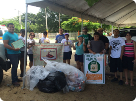
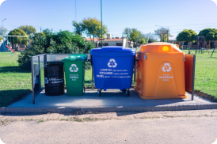

Comenzó la colecta de materiales reciclables
La colecta de reciclables arrancó en Los Pinos para reducir residuos y promover el reciclaje en la comunidad.
23-Septiembre-2024

La colecta de materiales reciclables dio inicio en el barrio Los Pinos, con la expectativa de generar un impacto positivo en el ambiente a través de la reducción de residuos. Durante todo el mes, se invita a los vecinos a participar en la separación de plástico, papel, cartón y vidrio, que podrán depositar en los puntos de acopio establecidos en el barrio.
Con el propósito de disminuir la basura generada en la comunidad, la campaña busca sensibilizar a los habitantes sobre la importancia del reciclaje y de adoptar hábitos más sostenibles. Para facilitar la colaboración, se han dispuesto varios puntos estratégicos donde los materiales podrán ser entregados de manera sencilla y organizada. También se realizarán talleres sobre reciclaje y compostaje para quienes deseen aprender más sobre estas prácticas y aplicarlas en su vida diaria.
La colecta estará activa durante todo el mes, con la esperanza de superar las metas de años anteriores. Para más información sobre los puntos de acopio y las actividades, se puede consultar en nuestras redes sociales.